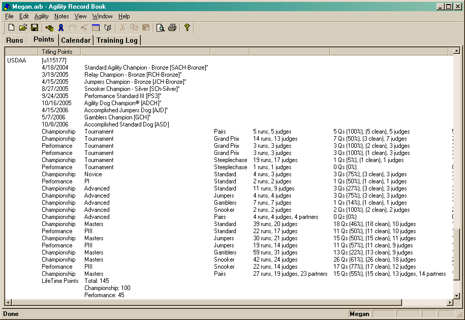

The Points tab is made up of one main window.

This window only presents information to you. There is no context menu or dialogs like in the other tabs. You can adjust what is visible by modifying the filter in the viewing preferences.
One thing to note about the view preferences: Only the venue and date portions of the filter apply to this view. The Qualifying status of runs is ignored. This is done in order to compute the qualifying status. Since this view is designed to show how many points you have earned, it doesn't make much sense to use the qualifying status of the filter!